第6章 恒星 巨星、矮星和主序星
我们已经研究了地球、月球、太阳系和太阳。要继续往我们的清单里加入宇宙事物，我们必须要摆脱我们所处的环境，深入太空深处。在本章中，我们将在距离上迈出一大步，考虑一般类型的恒星。我们的主要目标是理解组成星座的恒星的本质，以及无数的我们的肉眼无法察觉的更遥远的恒星。然而，我们将集中讨论如何确定它们共同的物理和化学性质，而不是研究个体的特殊性。
成千上万的恒星有规律地散布在天空中。通过编目并比较它们的基本属性——光度、温度、成分、质量和半径——天文学家获得了恒星如何形成和演化的新见解。如同太阳系中的比较行星学那样，恒星的研究在进一步了解银河系和我们所处的宇宙方面起着至关重要的作用。
学习目标
本章的学习将使你能够：
- 解释如何确定恒星的距离。
- 描述恒星在空间中的运动，并说出如何在地球上测量它们的运动。
- 区别光度和视亮度，并说明如何确定恒星的光度。
- 说明根据恒星的颜色、表面温度和光谱特性对它们进行分类的用途。
- 说明如何利用物理定律来估计恒星的大小。
- 描述如何用赫罗图来鉴别恒星的性质。
- 概括如何利用恒星光谱特性的知识来估计它的距离。
- 说明如何测量恒星的质量，以及质量如何与恒星的其他性质相互关联。
精通天文学
访问 MasteringAstronomy 网站的学习板块，获取小测验、动画、视频、互动图，以及自学教程。
6.1 太阳邻近区域
我们所处的星系——银河系——是由恒星和星际物质在引力作用下聚集在一起的巨大天体。它包含超过1000亿颗恒星，遍布将近100,000光年的巨大空间，它们都绕着距离地球约25,000光年的银河系中心旋转。事实上，太阳——还有其他每一颗我们凝视夜空时所见的恒星——都是这个庞大系统中的一分子。在这一章里，我们将介绍一些测量距离的方法，通过这些方法，天文学家将他们的研究扩展到越来越遥远的太空，在这样的巨大尺度下标定恒星的空间分布。
与行星一样，了解恒星的距离是确定它们的其他性质所必不可少的。瞩目探视我们银河系所在的空间，天文学家能够观测并研究数百万颗独特的恒星。通过观测其他遥远的星系，我们可以从统计上推断有数以万亿计的更多的恒星存在。总之，可观测的宇宙可能包含了几十兆亿颗（1兆亿=1021）恒星。然而，值得注意的是，尽管这一数字大得令人难以置信，但恒星的本质——它们在天空中的外观，它们的诞生、死亡，甚至是它们和周围环境的相互作用——可以仅仅通过几个基本的恒星物理量来了解：光度（亮度）、温度（颜色）、化学成分、大小和质量。（5.1节）
恒星距离测量和恒星性质分类两个方面的进展齐头并进。正如我们即将看到的那样，随着越来越多恒星的距离成为已知，天文学家获得了有关恒星性质的新见解，这些见解反过来提供了新的测量恒星距离的方法，并且适用于测量更加遥远的距离。从多方面来看，这些测距方法如何手挽手、肩并肩地发展起来的故事，正是现代天文学的历史。
恒星视差
回忆一下在第1章里，测量员和天文学家是如何利用视差来测量地球与太阳系天体距离的。视差是随着观测者视线的变化，前景物体相对于遥远背景的视位移。（1.6节）要确定物体的视差，我们要从某个基线的两端对它进行观测，并且测量物体的视位移引起的视线角度变化。在天文领域，通常可以通过比较在基线两端拍摄的照片来获得这一角度。
随着物体距离的增加，视差变得更小，从而更难以测量。即使是距离地球最近的恒星也是如此遥远，地球上没有足够长的基线可以用来精确地测量它们的距离。从地球上不同的地点观测，它们的视差变化还是太小了。然而，如图6.1所示（也可见图1.30），在一年中不同的时刻观测同一颗恒星，然后再比较我们的观测，我们可以将基线延长为地球绕太阳公转轨道的直径，即2个天文单位。只有利用这样非常长的基线，某些恒星的视差才是可测量的。如图中所示，随着我们从地球公转轨道的一端运动到另一端，恒星的视差角——或者，更普遍地被称为“视差”——通常被定义为它相对于背景的视位移的一半。

(a) 对于间隔6个月进行的恒星观测，基线是日地距离的2倍或2个天文单位。与图1.30相比，虽然展示的是一样的几何图形，但这里的尺度要更小。(b) 视位移（这里夸张地用白色箭头表示）通常使用照相方法测量，如图中所示的红色恒星。一年当中不同时刻对同一天空区域拍摄的图像可以确定恒星相对于背景恒星的视运动。
由于恒星视差如此之小，天文学家发现用角秒来度量视差比用角度方便。如果我们问，一颗观测到的视差正好等于1"的恒星的距离是多少，答案是206,265 AU，或 3.1×1016 m。（详细说明1-2）天文学家称这一距离为秒差距 (pc)，即“一角秒的视差”。由于视差随着距离的增加而减小，我们可以用下面的公式来将恒星的视差和距离联系起来：
因此，测量视差为1"的恒星距离太阳为1 pc。秒差距的定义使得距离和视差角之间的转换变得容易：一个视差为0.5"的天体距离为 1/0.5=2 pc，一个视差为0.1"的天体距离为 1/0.1=10 pc，以此类推。1 pc大约等于3.3光年。
我们最近的邻居
距离地球（即太阳）最近的恒星是半人马座的比邻星。这颗恒星是一个三聚星系统的成员之一（三颗独立的恒星彼此互相绕转，并由引力束缚在一起），该三星系统被称为半人马座阿尔法复合体。其中，比邻星的视差最大，为0.77"，这意味着它的距离约为 1/0.77 = 1.3 pc ——约为 270,000 AU 或 4.3光年。最近的恒星到地球的距离差不多是日地距离的300,000倍！在银河系内，这是一个相当典型的恒星际间的距离。
广阔的距离有时可以通过类比来领会。将地球想象成一粒沙子，在距离为1m的地方绕着弹珠大小的太阳公转。最近的恒星，也就是一颗弹珠大小的天体，距离却超过270 km远。除我们太阳系内的其他大行星外，两颗相距270 km的恒星之间就没有其他什么重要的天体了，行星的尺寸从沙粒大到毫米颗粒大，并且都位于距“太阳”50m的距离以内。这其中就是空乏的恒星际空间。
距离太阳第二近的邻居是比半人马座阿尔法复合体更远的巴纳德星。它的视差是0.55"或者说1.8 pc或6光年——在上一段的模型中距离地球370 km。图6.2是距离我们最近的银河系邻居的地图——在距地球4 pc的距离内，大约有30颗左右的恒星。

距离太阳最近的30颗恒星，投影在图中以便于揭示它们之间的三维关系。所有恒星都距离地球4 pc（13光年）以内。圆形网格表示在银道面内到太阳的距离，竖线表示垂直于银道面的距离。
由于地球大气的湍动虚化，从地面观测得到的恒星图像通常是半径约为1"的圆盘。（4.4节）然而，天文学家有专业设备，常规可测得的恒星视差可达0.03"，甚至更小，对应的恒星距地球大约在30 pc以内（100光年）。有几千颗恒星位于该范围之内，它们中的大多数的光度比太阳低得多，无法通过肉眼看到。高分辨率的自适应光学系统使恒星位置的测量精度更高，有些情况下可将视差的范围扩展到超过100 pc，然而，这样的测量仍然没有被“常规化”。（4.4节）
将测量仪器放置在地球大气层之外的太空，可以取得更好的精度。在20世纪90年代，欧洲依巴谷卫星取得的数据将精确测量的视差范围扩展到200 pc之外，包含将近100万颗星。尽管如此，我们银河系内绝大多数恒星也比此更为遥远。在依巴谷卫星之后，欧洲航天局(ESA)制订了雄心勃勃的计划，以大幅扩展恒星测量的范围。欧洲航天局的盖亚项目定于2013年发射，将惊人地达到10,000 pc，覆盖更大的银河系范围，包含将近10亿颗恒星！除了前所未有地精确描绘银河系的结构外，这一项目还能让天文学家详细地研究所有质量的近邻恒星的性质，并且极大地扩展了我们对系外行星系统的认识。有了这些新的数据，在30年的时间跨度内，几乎所有天文学研究所依赖的基本恒星数据库将扩展100万倍。这简直就是革命性的结果。
恒星自行
视差除了造成恒星的视运动外，恒星本身在星系间也有空间运动。在《今日天文——星系世界和宇宙的一生》第1章，我们将了解天文学家如何测量太阳绕银心的实际运动。然而，相对于太阳——随着我们绕着我们的母恒星在空间中运动，地球上的天文学家看到的恒星运动包含两种成分。恒星的视向速度——沿着视线方向的速度——可以利用多普勒效应来测量；(2.5节)对于许多邻近的恒星来说，它们的横向速度——垂直于视线方向的速度——也可以通过仔细地监测恒星在天空中的运动来确定。
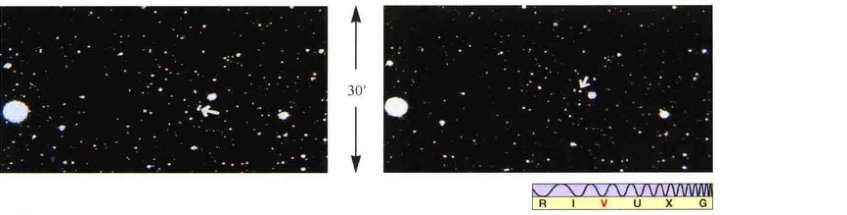图6.3比较了巴纳德星附近天区的两幅照片。这两幅照片是在一年中的同一天拍摄的，但年份差了22年。注意那颗用箭头指出的恒星，已经在所示的22年内发生了移动：如果将两幅照片叠加，视场内的其他恒星图像将一一对应，但巴纳德星的图像不会对应上。由于这些照片拍摄时，地球位于其公转轨道上的同一点，因此，观测到的位移不会是由于地球绕太阳运动而造成的视差。相反，这表明巴纳德星相对于太阳有着真实的空间运动。
比较两幅相隔22年拍摄的照片后，证明了巴纳德星的真实空间运动（如箭头所示）。[哈佛大学天文台]
从地球上观测并修正视差后得到的恒星在天空中的周年运动被称为自行。它描述了恒星相对于太阳的运动速度的横向分量。（在银河系内运动时，恒星和太阳都有空间运动；然而，从地球上观测，只有它们之间的相对运动会改变恒星在天空中的位置。）和视差一样，自行的测量也以角位移表示。由于所涉及的角度一般都非常小，所以自行通常表示为角秒每年。巴纳德星在22年内移动了228"，因此它的自行是228"/22年，即10.4"/年。
已知恒星的自行和它的距离，那么恒星的横向速度就很容易计算得到。在巴纳德星所处的距离上 (1.8 pc)，10.4"的角度对应的物理位移为0.000091 pc，约为28亿千米。巴纳德星需要花一年的时间 ($3.2 \times 10^7$ s) 才能运动这么大的距离，因此它的横向速度为28亿千米/$3.2 \times 10^7$ s，等于89 km/s。（详细说明1-2）虽然恒星的横向速度一般非常大——几十甚至是几百千米每秒——但它们距离太阳都很遥远，意味着它们的自行会很小，通常我们需要花很多年才能觉察出它们在天空中的运动。很可能，图6.3里的每一颗恒星相对于太阳都有横向运动。然而，只有巴纳德星的自行才大到在这些图中能被发现。事实上，巴纳德星拥有恒星中最大的自行。只有几百颗恒星的自行大于1"/年。
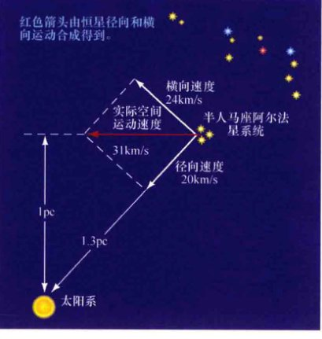现在考虑一下我们最近的邻居，半人马座阿尔法星系统，相对于我们太阳系的三维运动，如图6.4所描绘的那样。测量得到半人马座阿尔法星的自行为3.7"/年。在半人马座阿尔法星1.35 pc的距离处，这一测量结果意味着横向速度为24 km/s。我们可以利用多普勒效应来确定另一运动分量——视向速度。半人马座阿尔法星的谱线微微蓝移了一点——约0.0067%——天文学家测量该恒星系统的视向速度（相对于太阳）朝向我们为300,000 km/s × $6.7 \times 10^{-5}$ = 20 km/s。(2.5节)
这幅图梗概显示了半人马座阿尔法恒星系统相对于太阳系的运动。速度的横向分量由观测得到的恒星系统的自行得出。径向分量利用半人马座阿尔法星光谱中谱线的多普勒位移得到。红色箭头指示出真实的空间运动速度，由两个分量合并而成。
半人马座阿尔法星的真实空间运动是多少？这个太阳系外恒星系统会不会在未来某个时候与太阳系发生碰撞？答案是否定的。半人马座阿尔法星的横向速度将使之与太阳保持距离。我们可以根据勾股定理将横向速度 (24 km/s) 和视向速度 (20 km/s) 合并起来，如图6.4所示。总速度为大约31 km/s，运动方向为水平红色箭头$\sqrt{24^2+20^2}$所示。这幅图表明，半人马座阿尔法星距离我们最近不会超过1 pc，而且在距离现在的280个世纪后才会发生。
✓ 为什么天文学家不能利用地球表面上不同部分的同步观测来确定恒星的距离？
6.2 光度和视亮度
光度是恒星的固有特性——它完全不依赖于观测者的观测位置和运动速度。光度有时也被称为恒星的绝对亮度。然而，当我们观测一颗恒星时，我们所见的并不是恒星的光度，而是它的视亮度——在单位时间内到达单位面积的某种光敏表面或装置[如电荷耦合器件(CCD)芯片或人眼]的总能量。视亮度测量的不是恒星的光度，而是从地球上观测时所接收到的来自于恒星的能量通量（每单位面积每单位时间内接收的能量）。一颗恒星的视亮度，取决于其距地球的距离。在本节中，我们将更详细地讨论这两种重要的物理量彼此是如何相关的。
又一个平方反比律
图6.5展示了光线如何离开恒星并在太空中传播。辐射向外移动，穿过以光源为中心的半径不断增加的假想球体。单位时间内离开恒星的辐射总量——恒星的光度——是常数，因此光线传播的距离光源越远，穿过每单位面积的能量越少。想象一下，随着能量扩散到太空中，能量传播的面积越来越大，因此能量更加分散、被“稀释”。

由于球体的面积随着半径的平方增长，因此单位面积内的能量——通过人眼或望远镜见到的恒星的视亮度——与到恒星距离的平方成反比。
随着光线远离诸如恒星这样的光源，光线将逐渐被稀释，散布在越来越大的表面上（这里描绘为球壳的一部分）。因此，探测器所接收到的辐射总量（光源的视亮度）与到光源距离的平方成反比。
如果恒星的距离翻倍，那么它看起来会暗$2^2$倍，即4倍；距离增加3倍，那么它的视亮度会减少$3^2$倍，即9倍，以此类推。
当然，恒星的光度也会影响它的视亮度。光度翻倍将使穿过围绕恒星的任意球壳层的能量翻倍，因此视亮度也会翻倍。我们因此可以认为，恒星的视亮度与恒星的光度成正比，与距离的平方成反比：
因此，如果（只有这样）两颗一样的恒星位于距离地球一样远的地方，那么它们的视亮度一样亮。

然而，如图6.6所示，两颗不一样的恒星也可能有着同样的视亮度，如果光度更大的那颗恒星距离更远一些的话。明亮的恒星（即视亮度大的恒星）可能会发出强烈的辐射（高光度），也可能位于地球附近，或者两者兼而有之。没有额外信息的话，我们无法分辨光度增加和距离减少所带来的影响。同样地，一颗暗星（有着小的视亮度的恒星）可能是弱的辐射源（低光度），也可能距离地球很远，或两者兼而有之。
恒星A和B有着不同的光度，但对地球上的观测者来说，如果亮一些的恒星B要比暗一些的恒星A距离更远的话，它们看起来可能会一样亮。
确定恒星的光度实际是一个双重任务。首先，天文学家必须通过测量在给定时间内由望远镜探测到的能量来确定恒星的视亮度。其次，恒星的距离必须测量得到——近邻恒星利用视差，更遥远的恒星利用其他手段得到（稍后讨论）。然后才能利用平方反比律得到光度。这也是我们之前在第5章里，在讨论天文学家如何测量太阳光度时用到的基本推理方法。（用新的术语表示，太阳常数其实是太阳的视亮度。）(5.1节)
星等标度
天文学家通常使用被称为星等标度的概念来测量视亮度，而不是用国际单位制（如在第5章里太阳常数所使用的单位，W/m²），他们发现这样的表示要方便得多。(5.1节)这一标度可以追溯到公元前2世纪，当古希腊天文学家依巴谷将肉眼可见的恒星分为六类时。最亮的恒星被分为一等。第二亮的恒星星等被标为二等，以此类推，直到肉眼能见到的最暗的恒星，它们被分成六等星。一等星（最亮）到六等星（最暗）包括了古人所知的所有恒星。注意，星等是真正用视亮度（能量通量）来分级的——星等大意味着是暗星。就像日常用语中“一流”意味着“好”那样，天文学中的“一等”意味着“明亮”。
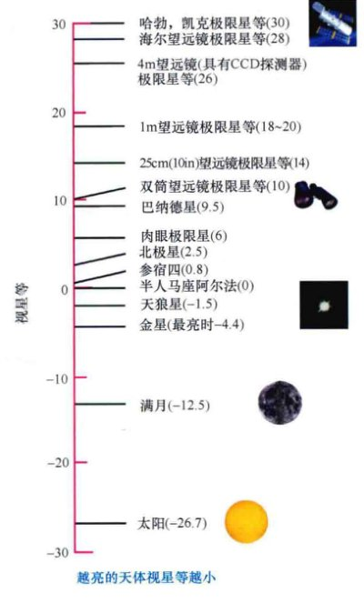现代天文学家在很多方面修改和扩展了星等标度方法。首先，我们现在定义天体5个星等的变化（星等从1等变到6等，或从2等变到7等）对应于视亮度恰好变化100倍。第二，由于我们实际讨论的是视（而不是绝对）亮度，因此依巴谷分级系统中的数字被称为视星等。第三，标度不再局限为整数：视星等为4.5等的恒星视亮度介于4等星和5等星之间。最后，星等扩展到1等和6等之外：非常明亮的天体的视星等甚至可以比1等小得多（即负值），非常暗弱的天体的视星等可以远远大于6等。
本图列举了一些天体的视星等，以及一些用于观测这些天体的望远镜的极限星等（即能够探测到的最暗星等）。
图6.7列举了一些天体的视星等，从视星等为-26.7的太阳开始，到哈勃或凯克望远镜能够探测到的最暗天体，视星等为30等的天体——大致相当于从等于地球直径的距离处观看一只萤火虫那么暗。注意，这样的星等变化范围所对应的视亮度变化其实非常大（实际上，亮度变化倍数为 $100^{(30 - (-26.7))/5} = 100^{11.34} \approx 5 \times 10^{22}$倍）。事实上，天文学家采用这种标度方法的一个主要原因是，这样能够将观测到的恒星属性的大范围变化压缩成更为“可控”的形式。
当在某个距离上观测恒星时，测出的视星等是恒星的视亮度。然而，为了比较恒星内在的或者说绝对的性质，天文学家假想在10 pc的标准距离上观测所有的恒星。这里采用10 pc没有任何特殊的原因——仅仅是为了方便。当把恒星放在距离观测者10 pc时，所得到的恒星视星等被称为其绝对星等。由于在这样的定义下，恒星的距离固定，因此绝对星等测量的是恒星的绝对亮度，即光度。
详细说明 6-1 星等标度的更多知识
让我们依据星等来重新讨论两个重要的话题——恒星光度和平方反比律。
绝对星等相当于恒星的光度——恒星的内禀属性。给定太阳的绝对星等为4.83以后，我们可以根据这两个量建立一个转换表。由于亮度增加100倍对应于星等减少5个单位，那么光度是太阳光度100倍的恒星的绝对星等为 $4.83 - 5 = -0.17$，而光度为0.01太阳光度的恒星的绝对星等为 $4.83 + 5 = 9.83$。
我们可以将其中的空白填满，因为已知1个星等对应于 $100^{1/5} \approx 2.512$ 倍的变化，2个星等对应于 $100^{2/5} \approx 6.310$ 的变化，以此类推。10倍亮度的变化对应于2.5个星等。公式如下：
$L(\text{太阳光度}) = 10^{-(M-4.83)/2.5}$
将平方反比律加到这些公式中，记住恒星的距离增加10倍，它的视亮度会降低100倍（平方反比律），因此它的视星等增加5等；距离增加100倍，视星等增加10等，以此类推。距离每增加10倍，视星等都会增大5等。由于绝对星等无非是距离为10 pc的视星等，因此我们可以写为：
视星等 - 绝对星等 = $5 \log_{10} (\frac{\text{距离}}{10 \text{秒差距}})$
示例2：太阳的绝对星等为4.83，从100 pc的距离上观看，它的视星等为 $4.83 + 5 \log_{10}(100/10) = 4.83 + 5(1) = 9.83$（注：原书示例中计算可能有误或近似，此处修正逻辑）。这远远低于双筒望远镜的观测能力，甚至是较大的业余天文望远镜（见图6.7）。
✓ 两颗恒星有着相同的观测视星等。根据这一基本信息，如果可以的话，我们能够得到有关它们光度的什么信息？
6.3 恒星温度
仰望夜空，你一眼就能知道哪些恒星较热、哪些恒星较冷。图6.8中，展示了通过一台小型望远镜所看到的猎户星座，较冷的红色恒星参宿四和较热的蓝色恒星参宿七的颜色清晰可见。注意，这些颜色是恒星的内禀属性，与多普勒红移和蓝移毫不相关。然而，要得到这些恒星的温度（参宿四是3200K，参宿七是11,000K），需要更准确的观测。为了进行这样的观测，天文学家需要依靠辐射定律和恒星光谱的详细性质。(2.4节、3.3节)

(a) 不同颜色的恒星组成了猎户星座，它们很容易就能从这幅由小型望远镜上搭配的宽视场照相机所拍摄的照片中被分辨出来。左上方红色的亮星是参宿四 (α)，右下方蓝白色的恒星是参宿七 (β)。(b) 在朝向银河系中心的方向上，难以置信地充满了多彩的恒星。[P. Sanz / Alamy图库, NASA]
颜色和黑体曲线
天文学家可以通过测量恒星在某些频率的视亮度（能量通量），然后将这些观测与适当的黑体曲线进行匹配，从而确定恒星的表面温度。(2.4节)以太阳为例，符合太阳辐射最好的理论曲线是5800K的光谱。(5.1节)同样的方法也适用于其他任何的恒星，无论其距离地球的远近。
由于我们对黑体曲线的基本形状了解充分，因此天文学家可以仅仅利用两个波长处的观测来估计恒星的温度（这非常幸运，因为暗星的精密光谱通常难以获得，并且非常耗时）。这一目标可以通过使用望远镜滤光片来屏蔽特定波长范围之外的所有辐射来达到。例如，B（蓝色）滤光片屏蔽了除紫色到蓝色光这一范围之外的其他所有辐射。V（可见光）滤光片只能让波长在490~590nm（绿色到黄色）内的辐射通过。
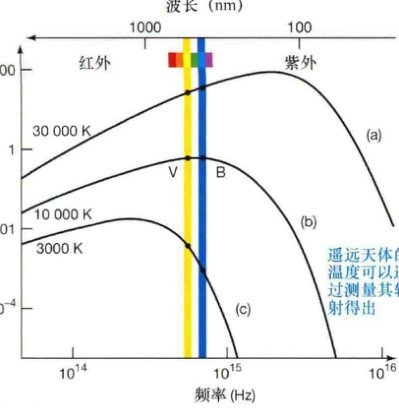恒星(a)是一颗非常炽热的—30,000K的恒星，因此它通过B（蓝色）滤光片的流量比通过V（可见光）滤光片的流量强度大。恒星(b)的B和V测量值大致相等，因此它看起来发白，温度大约为10,000K。恒星(c)的颜色偏红；它的V波段强度比B波段的值要大得多，温度为3000K。
图6.9说明，滤光片准许不同温度的天体辐射透过的光量不同。曲线(a)对应于非常炽热的、温度为30,000K的辐射源，透过B滤光片的辐射比透过V滤光片的辐射要多得多（大约30%以上），因此该天体在B滤光片中看起来要比V滤光片亮。曲线(b)对应的温度为10,000K，通过B和V滤光片的流量大致相等。对于较冷的3000K的曲线(c)，V滤光片范围内接收到的能量比B滤光片的多大约5倍，因此，B滤光片得到的图像比V滤光片得到的图像弱得多。在每种情况下，仅仅基于这两个测量结果，都可能重现整个黑体曲线，因为没有其他的黑体曲线都能通过这两个测量点。
恒星光谱
颜色是对恒星有效的描述方式，但天文学家常常会结合从光谱观测中获得的额外恒星物理信息，使用一种更加复杂的策略来对恒星属性进行分类。图6.10比较了几颗不同恒星的光谱，按表面温度从高到低排列。所有光谱的范围从400~650nm，每条光谱都显示了叠加在连续颜色变化背景之上的一系列暗黑的吸收线，就像太阳光谱那样。(5.3节)然而，这些精确的谱线图案揭示了许多不同点。一些恒星在长波范围内有很强的吸收线（图的左边）。其他恒星在短波范围内有很强的吸收线（图的右边）。还有一些恒星的强吸收线覆盖了整个可见光谱的范围。这些不同点告诉了我们什么呢？

七种表面温度范围不同的恒星的观测光谱比较。这些不是混乱和复杂的实际光谱，而是经艺术家简化后突出说明重要谱线特征的光谱。顶端是最炽热恒星的光谱，显示出氦线和多种重元素电离后的谱线。底端是最冷恒星的光谱，缺少氦线，但有丰富的中性原子和分子谱线。温度介于其间的恒星，氢的谱线是最强的。
尽管许多元素的谱线展示出广泛的强度变化，但图6.10中光谱的区别并不在于成分的不同。详细的谱线分析表明这七颗恒星有着类似的元素丰度——都与太阳丰度大致相当。(5.3节)相反，正如在第3章里讨论过的，谱线差异几乎完全来自于恒星的温度。(3.5节)图中顶端的光谱正好是一颗与太阳成分类似的、温度大约为30,000K的恒星所能产生的光谱，第二幅光谱我们可以预计来自于温度为20,000K的恒星，以此类推，直到底部温度为3000K的恒星。
图6.10中光谱的主要区别在于：
- 表面温度超过25,000K的恒星光谱通常有着一次电离氦和多次电离的重元素的强吸收线。较冷恒星的光谱中没有这些强吸收线，是因为只有非常炽热的恒星才能激发和电离这些紧密束缚的原子。
- 相比之下，在非常炽热的恒星的光谱中，氢的吸收线相对较弱。原因并不是因为缺乏氢，氢是迄今为止所有恒星中最为丰富的元素。然而，在高温下，多数氢被电离，因此很少有完整的氢原子来产生强烈的谱线。
- 表面温度居中的、大约为10,000K的恒星中氢的谱线最强。这一温度正好适合电子频繁地在氢的第二和更高轨道之间运动，从而产生特有的可见氢谱线。（详细说明3-1）
- 在表面温度在4000K以下的恒星中，氢谱线同样暗弱，但这次是因为温度太低，不能将大量电子从基态中激发出来。(3.2节)这些恒星中最强的谱线来源于弱激发的重原子；没有电离元素产生的谱线。最冷恒星的温度低至分子可以存在，许多观测到的吸收线来自于分子，而不是原子。
光谱分类
随着全世界的天文台积累天空两个半球的恒星光谱，在20世纪开始之前就已经获得了许多恒星类似于图6.10所示的那些恒星光谱。在1880年到1920年之间，通过将观测谱线与实验室中得到的谱线进行比对，研究人员准确地鉴别出了一些观测谱线。然而，研究人员无法深刻理解谱线是如何产生的。现代原子理论那时还没有得以发展，因此，对谱线强度的正确解释，如前所述，在当时是不可能的。
缺乏对原子如何产生光谱的完整理解，早期对恒星的人工分类主要是依据它们的氢谱线强度。他们采用字母A, B, C, D, E......的策略，其中有最强氢谱线的A型恒星，被认为拥有比B型恒星更多的氢，其他依次类推。分类甚至扩展到了字母P。
在20世纪20年代，科学家开始了解原子结构的错综复杂和谱线形成的原因。天文学家很快意识到，可以依据恒星的表面温度来进行更有意义的分类。然而，他们不是采用全新的策略，而是选择打乱已有的字母分类——那些基于氢谱线强度的分类——基于温度重新排序。在现代策略下，最炽热的恒星由O表示，因为它们的氢吸收线非常弱，在原来的策略下被分类到最后。按照温度降低的顺序，现在保留下的字母为O、B、A、F、G、K、M。（其他的字母分类已经被丢弃了。）这些恒星类型被称为光谱型（或称光谱类型）。采用历史悠久的（但不合时宜的）记忆方法：“Oh, Be A Fine Girl, Kiss Me”，便可以按正确的顺序记住它们。
天文学家进一步将每个字母光谱类型细分为10个子类，用数字0~9来表示。按照惯例，数字越小，恒星越炽热。例如，我们的太阳被归类为G2型恒星（比G1型恒星稍冷，比G3型恒星稍热）。表6.1列出了这些类型对应的表面温度。
表6.2 恒星光谱型
| 光谱型 | 表面温度/K | 显著吸收线 | 常见例子 |
|---|---|---|---|
| O | 30,000 | 强电离氦线；重元素的多次电离谱线；弱氢谱线 | 参宿三 (O9) |
| B | 20,000 | 中等强度的中性氦线；重元素的一次电离谱线；中等强度的氢线 | 参宿七 (B8) |
| A | 10,000 | 非常弱的中性氦线；重元素的一次电离谱线；强氢线 | 织女星 (A0), 天狼星 (A1) |
| F | 7,000 | 重元素的一次电离谱线；中性金属谱线；中等强度氢线 | 老人星 (F0) |
| G | 6,000 | 重元素的一次电离谱线；中性金属谱线；相对较弱的氢线 | 太阳 (G2), 半人马座阿尔法星 (G2) |
| K | 4,000 | 重元素的一次电离谱线；强中性金属线；弱氢线 | 大角星 (K2), 毕宿五 (K5) |
| M | 3,000 | 强中性原子谱线；中等强度的分子谱线；非常弱的氢线 | 参宿四 (M2), 巴纳德星 (M5) |
✓ 为什么恒星的光谱类型取决于它的温度？
6.4 恒星的大小
大多数恒星在天空中都是无法分辨的光点，即使使用最大的望远镜来观测。即便如此，天文学家也常常能十分精确地确定它们的大小。
直接和间接测量
有些恒星足够大、足够亮，距离也足够近，使得我们能够直接测量它们的大小。一个著名的例子就是明亮的红色恒星参宿四，猎户星座中最有名的成员（见图6.8）。如图6.11(a)所示，参宿四几乎大到在短波上能够被哈勃太空望远镜分辨出来。逐步改善的干涉测量方法和自适应光学技术帮助天文学家构建了少量分辨率非常高的恒星图像。一些图像显示的细节足以展现一些表面特征，如图6.11(b)所示的同样的参宿四。

膨胀的参宿四（这里以伪彩色显示）距离我们足够近，可以直接得到它的大小，以及一些表面特征，它们被认为类似于太阳上发生的风暴。(a) 参宿四的紫外图像。(b) 得到的红外图像，更好地显示了参宿四以及它表面上的两个斑点。[ESA/NASA, SAO]
一旦能够测量恒星的角大小，如果它的距离也已知，那么我们就可以利用简单的几何方法确定它的半径。(1.6节)例如，距离130pc、角直径可达0.045"的参宿四，它的最大半径是太阳的630倍。
大多数恒星的距离都太遥远或是太小，而无法采用这样的直接测量方法。相反，它们的大小是间接地利用半径-光度-温度关系(p.153)估计得到的。
详细说明 6-2 估计恒星的半径
我们可以结合斯特藩-玻耳兹曼定律 $F=\sigma T^4$ 和球体面积公式 $A=4\pi R^2$，从而得到正文中所描述的有关恒星半径(R)、光度(L)和温度(T)之间的关系：
$L = 4\pi R^2 \sigma T^4$
或
光度 $\propto$ 半径$^2$ $\times$ 温度$^4$
如果我们便捷一点，使用“太阳”的单位，用太阳光度 ($3.9 \times 10^{26}$ W) 表示L，以太阳半径 ($696,000$ km) 表示R，以太阳的温度 ($5800$ K) 表示T，那么我们可以消除常数 $4\pi\sigma$，将公式改写为
$R = \sqrt{L} / T^2$
这一辐射定律的简单应用几乎是本书中所有恒星大小估计的基础。
示例：按照上面定义的太阳单位，恒星毕宿五的光度为330单位，温度为4000K/5800K=0.69单位。因此，根据公式，它的半径为 $R = \sqrt{330} / 0.69^2 = 18 / 0.48 \approx 39$ 太阳半径——因此毕宿五是一颗巨星。
巨星和矮星
这一半径-光度-温度关系很重要，因为它表明已知恒星的光度和温度，如此便可以推导并估计恒星的半径——一种间接确定恒星大小的方法。
图6.12展示了几颗著名的恒星估计的半径大小。有些恒星，如毕宿五，半径为10~100倍太阳半径。这样的恒星被称为巨星。更大的、半径超过1000个太阳半径的恒星被称为超巨星。参宿四就是红超巨星的一个典型例子。
相比之下，有些恒星，如南河三B，半径比地球半径稍稍大一些，被称为矮星。天文学中，术语矮星指的是一切半径与太阳相当或者更小的恒星（包括太阳自己）。绝大多数恒星的半径范围从小于太阳半径的1%到超过100倍太阳半径。

这里列出了几颗不同大小的著名恒星。红巨星心宿二只有一部分显示在此尺度内，而超巨星参宿四会填满整页纸。（符号“⊙”表示的是太阳，符号“R⊙”意为“太阳半径”。）
✓ 我们可以测量一颗恒星的半径而不需要知道恒星到地球的距离吗？
6.5 赫罗图
天文学家使用光度和表面温度来进行恒星分类，就像使用身高和体重来区分人类体征那样。图6.13给出了几颗著名恒星的光度与温度关系图。这种形式的图被称为赫-罗图，简称赫罗图(H-R diagram)，以丹麦天文学家埃纳·赫茨普龙和美国天文学家亨利·诺里斯·罗素命名。纵坐标以太阳光度为单位表示光度，横坐标表示表面温度，温度从右到左增加。
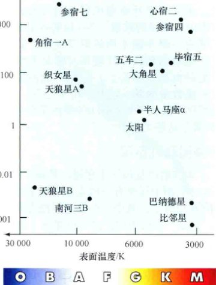光度与表面温度（或光谱型）的比较图是比较恒星的有效手段。这里画出了文中提到过的一些恒星的数据。
主序
随着赫茨普龙和罗素在图中绘制出越来越多恒星的温度和光度，他们发现事实上存在着这样一种关系：恒星并不是均匀分布在赫罗图上的；相反，大部分恒星被限制在一个相当明确的带状区域内，从左上顶端（高温、高光度区）沿对角伸展到右下底部（低温、低光度区）。这样一条跨越赫罗图的恒星带被称为主序。
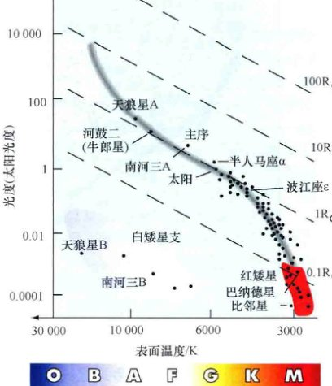大多数恒星位于赫罗图上被称为主序的长而狭窄的阴影部分区域中。这里画出的恒星距离太阳不超过5pc。每条沿对角的虚线对应的恒星半径为常数。
图6.14包含约80颗距离太阳在5pc以内的恒星。随着图中包含的点越来越多，主序逐渐被“填满”，主序的图像变得更加清晰。绝大多数太阳邻近区域内的恒星都位于主序位置。主序星的表面温度范围从3000K左右到30,000K以上。相比之下，观测到的光度变化范围非常之大，覆盖了大概8个数量级（即一亿倍的变化）。
利用半径-光度-温度关系，天文学家发现，恒星半径也沿主序在变化。赫罗图右边底端的暗弱红色M型恒星大约只有太阳半径的十分之一大，而左边顶部明亮的蓝色O型恒星大约比太阳大10倍。
白矮星和红巨星
大多数恒星位于主序段。然而，图6.13到图6.15的图中显然有一些点没有在主序位置。如图6.13所示，其中一个像这样的点是南河三B，它是一颗前面讨论过的白矮星(6.4节)，表面温度为8500K，光度约为太阳光度的万分之六。这一区域被称为白矮星支。

天空中最亮的100颗恒星的赫罗图，它们一般都是光度最大的恒星。
图6.13中也显示了毕宿五，它的表面温度为4000K，但光度为太阳光度的300倍左右。另有一颗星是参宿四，它是天空中第九亮的恒星，温度比毕宿五稍低，但要亮100倍以上。这些恒星位于赫罗图的右上角（见图6.15），该区域被称为红巨星支。
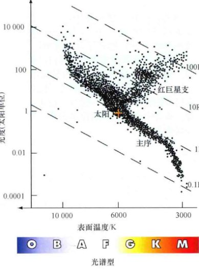这幅有史以来最完整的赫罗图之一的简化版本包含超过20,000个数据点，由欧洲依巴谷飞船测量得到的距离太阳在几百秒差距内的恒星组成。
依巴谷项目(6.1节)除了用前所未有的精度确定了数十万颗恒星的视差外，也测量得到了超过200万颗恒星的颜色和光度。图6.16展示了基于海量依巴谷数据的很少一部分所作的赫罗图。主序和红巨星支清晰可见。然而，只有很少的白矮星可见，这仅仅是因为依巴谷的望远镜只能观测相对较亮的天体。
6.6 延伸到宇宙距离尺度
分光视差
对恒星来说，诀窍在于找到不需要知道距离就能测量光度的独立手段。赫罗图就可以提供这样的方法。例如，假设我们观测一颗恒星并且得到它的视星等。如果我们有一些额外的信息：该恒星位于主序并且光谱型为A0，那么我们就可以从图6.15中读出恒星的光度。一颗主序A0恒星的光度大约为100个太阳单位。根据详细说明6-1，对应的绝对星等为0.5等，因此恒星的距离为100pc。
这一利用恒星的光谱型来推断距离的过程被称为分光视差法。关键步骤在于以下：
- 我们测量恒星的视亮度和光谱型，并不需要知道它的距离有多远。
- 然后我们利用光谱型来估计恒星的光度。
- 最后，我们应用平方反比律来确定恒星的距离。
对恒星光度和视亮度的了解可以用于距离的估计。天文学家使用这一被称为分光视差的第三级距离阶梯，可以测量得到无法清晰分辨的恒星的距离——远至几千秒差距。
光度型
如果正在研究的恒星恰好是红巨星或白矮星并且不在主序内，那会发生什么呢？回想一下第5章里对谱线宽度的详细分析，这能够提供谱线形成处的气体密度信息。(5.3节)红巨星的大气比主序星的大气要稀薄得多，而主序星的大气要比白矮星的大气稀薄得多。图6.18说明了同一光谱型的主序星和红巨星的光谱区别。
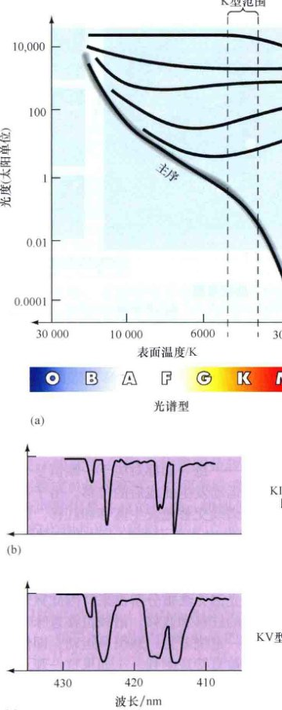(a) 赫罗图中标准恒星光度型分类的近似位置。吸收线的宽度也提供了有关恒星大气宽度的信息。主序K型恒星的致密大气有着较宽的谱线(c)，比同一光谱型的巨星(b)的谱线宽。
多年来，天文学家发展出一套系统来根据谱线宽度对恒星进行分类。由于谱线宽度取决于恒星大气的密度，而密度又与光度密切相关，因此这一恒星属性被称为光度型。标准的光度型分类在表6.3中列出，并且展示在图6.18(a)的赫罗图中。
表6.3 恒星光度型
| 类型 | 描述 |
|---|---|
| Ia | 亮超巨星 |
| Ib | 超巨星 |
| II | 亮巨星 |
| III | 巨星 |
| IV | 亚巨星 |
| V | 主序星和矮星 |
6.7 恒星质量
是什么最终确定了恒星在主序上的位置？答案是恒星的质量及其成分。质量和成分是任一恒星的基本属性。它们一起唯一地确定了恒星的内部结构、恒星的外貌，甚至是恒星未来的演化。
双星
大部分恒星是两颗或两颗以上的恒星互相绕转组成的多星系统的成员。多数恒星是双星系统，由两颗绕其共同质心运行的恒星构成，在它们相互的引力吸引下聚在一起。
天文学家根据从地球上看到的双星外貌和观测它们的难易程度，对双星系统（或简称为双星）进行了分类。目视双星的成员间隔较远，足够明亮，可以单独地进行观测和监控，如图6.19所示。
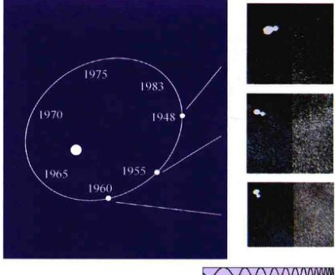如果目视双星系统的每个成员都清晰可见的话，那么它的周期和间隔就可以直接观测得到。左图是双星克鲁格60的轨道示意图，右图是在指定年份所拍摄的实际照片。[哈佛大学天文台]
最常见的是分光双星，它们的距离很遥远，无法单独分辨它们的成员星，但在监测它们互相绕转时，谱线的前后多普勒位移能够间接地探测它们。在双谱分光双星中，可见两套有区分的谱线——每一套都对应于一颗恒星——随着恒星的运动发生前或后的位移。在更常见的单谱分光双星系统中，如图6.20中所示的那些，其中一颗恒星太过暗弱，以至于它的光谱无法被分辨出来，因此只观测到一套谱线的红移和蓝移。

通过测量光谱中一颗恒星相对于另一颗恒星发生的周期性的多普勒位移，可以确定双星的属性。这是一个单谱双星系统，只可见一条（来自较亮成员的）光谱。
更为少见的是交食双星，这对恒星的轨道平面几乎与我们的视线相平行。在这种情况下，如图6.21所示，随着一颗恒星从另一颗恒星前面通过（掠过），我们会观测到星光的周期性变暗。通过研究来自于双星系统的光的变化——双星的光变曲线——天文学家不仅可以详细地推断有关恒星轨道和质量的信息，还可以推断出它们的半径。
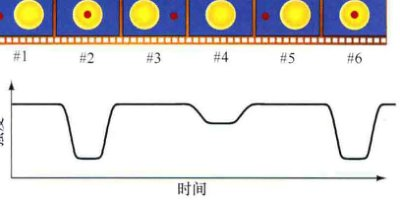如果双星系统的两颗恒星发生互相掩食，那么通过观测一颗恒星从另一颗恒星前面经过时星光发生的周期性变暗现象，就可以获得有关它们半径和质量的额外信息。
详细说明 6-3 测量双星系统中的恒星质量
如正文中所讨论的，大多数恒星都是双星系统的成员星。考虑太阳附近由亮星天狼星A和其暗弱的伴星天狼星B组成的目视双星系统。通过观测恒星互相的绕转，或是通过观测由于其暗弱的伴星而引起的天狼星A的来回摆动，可以简单地确定双星的轨道周期。周期几乎正好为50年。
对轨道的进一步研究，使得我们能够确定各个恒星的质量。多普勒观测表明，天狼星A大约以其伴星速度的一半绕它们的质心运动。这意味着天狼星B的质量一定是天狼星A的两倍（注：此处原文逻辑可能有误，应为A的质量是B的两倍，因速度反比于质量）。从而得到天狼星A和天狼星B的质量分别为2.1倍和1.1倍太阳质量。

(a) 主序星半径与质量的关系。实际观测表明，在很大范围内，恒星半径的增加几乎与质量的增加成正比。(b) 主序星光度与质量的关系。光度大致以质量的四次方增加。
6.8 质量和其他恒星属性
图6.22是一幅简略的赫罗图，说明了恒星质量如何沿着主序变化。从低质量的红矮星到大质量的蓝巨星，都有着明确的连续性。除了少数例外，主序星的质量范围从太阳质量的1%到20倍太阳质量。恒星在自身形成时的质量确定了其在主序上的位置。
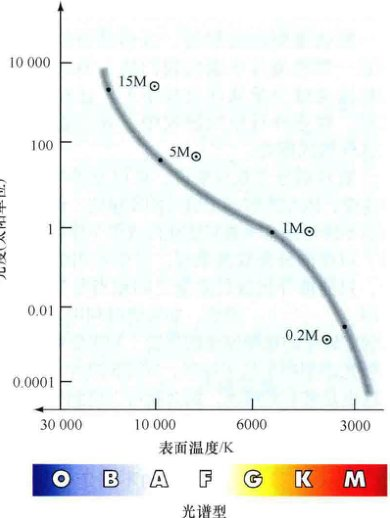比起任何其他的恒星属性，质量更能够确定一颗恒星在主序上的位置。低质量的恒星温度低、光度小，它们位于主序的底部；质量非常大的恒星又炽热又明亮，它们位于主序的顶部。（“M⊙”指的是“太阳质量”）
图6.24说明了主序星的半径和光度与其质量的关系。作为一条近似的经验法则，我们可以说，恒星半径的增加正比于恒星的质量，而光度的增加要快得多——差不多是质量的四次方。

通过仔细测量太阳邻近区域内的恒星而确定的主序星质量分布范围。
终极问题
我们的太阳将随着年龄的增大而膨胀，大约在50亿年内，它会开始耗尽燃料，注定会迅速膨胀成为一颗红巨星。目前最吸引人的问题是，红巨星的太阳是否能膨胀到足以吞噬掉地球？这一问题经常被提起，然而由于时间还很遥远，很快又被忽视掉。没有人能确定这一点。我们知道的是，太阳正在失去大量的物质，从而使其引力变小。也许这将会使地球最终退后至相对安全的轨道上。
章节回顾
小结
- 最近的恒星的距离可以通过三角视差方法来测量。视差角为1角秒(1")的恒星距离地球为1秒差距(p.143)——大约为3.3光年远。
- 除了由于地球绕太阳公转造成的视运动外，恒星在空间中也有真实的运动。恒星的自行(p.144)——即穿过天空的真实运动——可以用于测量垂直于我们视线方向的恒星运动速度。恒星的视向速度——沿着视线方向的速度——可以通过测量恒星谱线的多普勒位移得到。
- 恒星的视亮度(p.145)是到达探测器的恒星能量流量。视亮度随距离的平方降低。光学天文学家使用星等标度(p.146)来表示并比较恒星的亮度。恒星的绝对星等(p.147)是将其放置在距离观测者10pc的标准距离上时所具有的视星等，是恒星光度的量度。
- 通过测量恒星通过两个或更多光学滤光片的亮度，然后将结果与黑体曲线匹配，可以测得恒星的温度。恒星的光谱观测为确定恒星温度和恒星组分提供了准确的方法。天文学家根据恒星光谱里的吸收线进行分类。按温度递减的顺序，标准的恒星光谱型(p.151)为O, B, A, F, G, K和M型。
- 大多数恒星的大小是间接地利用半径-光度-温度关系(p.153)估计得到的。大小与太阳相当或更小的恒星被分成矮星(p.154)，比太阳大但不超过100倍的恒星被称为巨星(p.154)，大小超过太阳尺寸100倍的恒星被称为超巨星(p.154)。
- 恒星光度与恒星光谱型（或温度）的示意图叫作赫罗图(p.154)或颜色-星等图(p.154)。大约90%的恒星位于主序(p.155)，它们从炽热并明亮的蓝超巨星(p.156)和蓝巨星(p.156)开始，穿过像太阳这样的中等大小的恒星，一直延伸到温度低并且暗弱的红矮星(p.156)。
- 如果已知一颗恒星位于主序，那么测量它的光谱型就能够估计得到它的光度并由此计算出恒星的距离。这一确定距离的方法被称为分光视差法(p.157)。恒星的光度型(p.158)使得天文学家能够区分同一光谱型的主序星、巨星和超巨星。
- 天空中大多数的恒星都不是孤立的，而是绕着其他恒星运行的双星系统(p.160)。目视双星(p.160)中的两颗成员星都可见，轨道也可知。分光双星(p.160)的成员星不能被分辨，但可以通过光谱观测来探测它们的轨道运动。从地球上观测时，交食双星(p.161)的轨道朝向使得一颗恒星周期性地在另一颗恒星前面穿行，使我们接收到的星光变暗淡。对双星系统的研究常常能够测得恒星的质量。
- 恒星的质量决定了恒星的大小、温度和亮度。质量-光度关系：光度大致以质量的四次方增加。大质量恒星的燃料燃烧迅速，因此寿命比太阳的寿命短得多。低质量的恒星消耗燃料缓慢，可以在主序上保持数万亿年。
复习与讨论
- 如何利用视差测量恒星的距离？什么是秒差距？
- 说明从地球上观测时，恒星的真实运动转换成哪两种方式的运动。
- 天文学家如何测量恒星的光度？光度和视亮度之间有什么区别？
- 天文学家如何测量恒星的温度？
- 简要描述如何根据恒星的光谱性质来进行恒星分类。
- 描述天文学家如何测量恒星的半径。列出红巨星和白矮星的一些性质。
- 为什么一些恒星光谱中氢的吸收线非常少？
- 将恒星画到赫罗图上需要知道恒星的什么信息？
- 什么是主序？恒星的什么基本属性决定了它在主序上的位置？
- 为什么基于亮星数据绘制的赫罗图与基于近邻恒星数据绘制的赫罗图有如此大的不同？
- 分光视差能确定的距离有多远？
- 银河系中最常见的恒星是什么？为什么我们在赫罗图中看到它们的数量并不多？银河系中最少见的恒星是什么？
- 如何通过观测双星系统来确定恒星的质量？
- 大质量恒星开始燃烧时的燃料比小质量恒星的燃料要多得多。为什么大质量恒星的寿命反而要短？
- 一般情况下，是否能够利用一颗恒星在赫罗图上的位置来确定它的年龄？为什么？
概念自测：选择题
- 如果地球绕太阳的公转轨道小一些，图6.1中恒星的视差角会：(a) 变小；(b) 变大；(c) 不变。
- 从1 pc的距离上观看，地球轨道的角大小为：(a) 1°; (b) 2°; (c) 1'; (d) 2"。
- 根据平方反比律，如果灯泡的距离增加5倍，那么灯泡的视亮度会：(a) 保持不变；(b) 变5倍；(c) 变暗10倍；(d) 变暗25倍。
- 与距离为100 pc、绝对星等为-5等的恒星相比，距离为10 pc、绝对星等为5等的恒星看起来：(a) 亮一些；(b) 暗一些；(c) 亮度一样；(d) 更蓝。
- 冥王星的视星等大约为14等。根据图6.7，冥王星：(a) 在黑夜肉眼可见；(b) 通过双筒望远镜可见；(c) 使用1m口径望远镜可见；(d) 只能使用哈勃太空望远镜观看。
- 光谱型为M型的恒星光谱中没有很强的氢线是因为：(a) 它们含的氢很少；(b) 它们的表面温度太低，大多数氢都处于基态；(c) 它们的表面温度太高，大多数氢都被电离了；(d) 氢线被其他元素的更强的谱线淹没掉了。
- 温度低的恒星可能也会非常明亮，如果它们非常：(a) 小；(b) 热；(c) 大；(d) 靠近太阳系。
- 根据图6.13，巴纳德星一定：(a) 较热；(b) 较大；(c) 距离较近；(d) 比比邻星蓝。
- 图6.15中，织女星和大角星在纵轴上对应的位置几乎相同。这意味着大角星一定比织女星：(a) 热；(b) 暗；(c) 大；(d) 光谱型相同。
- 确定恒星的质量可以：(a) 通过测量它的光度；(b) 通过确定它的成分；(c) 通过测量它的多普勒位移；(d) 通过研究它绕双星伴星运动的轨道。